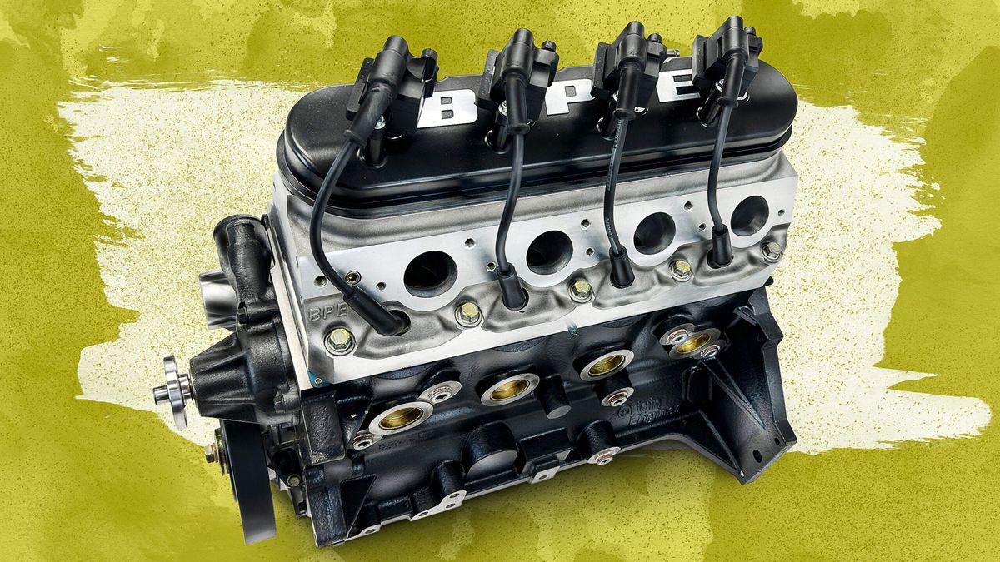
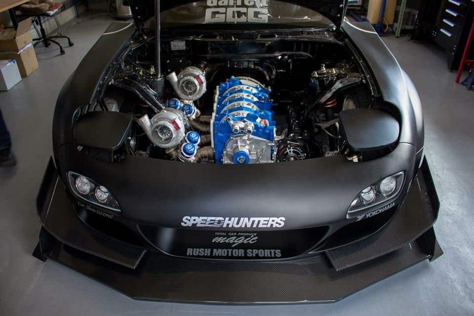
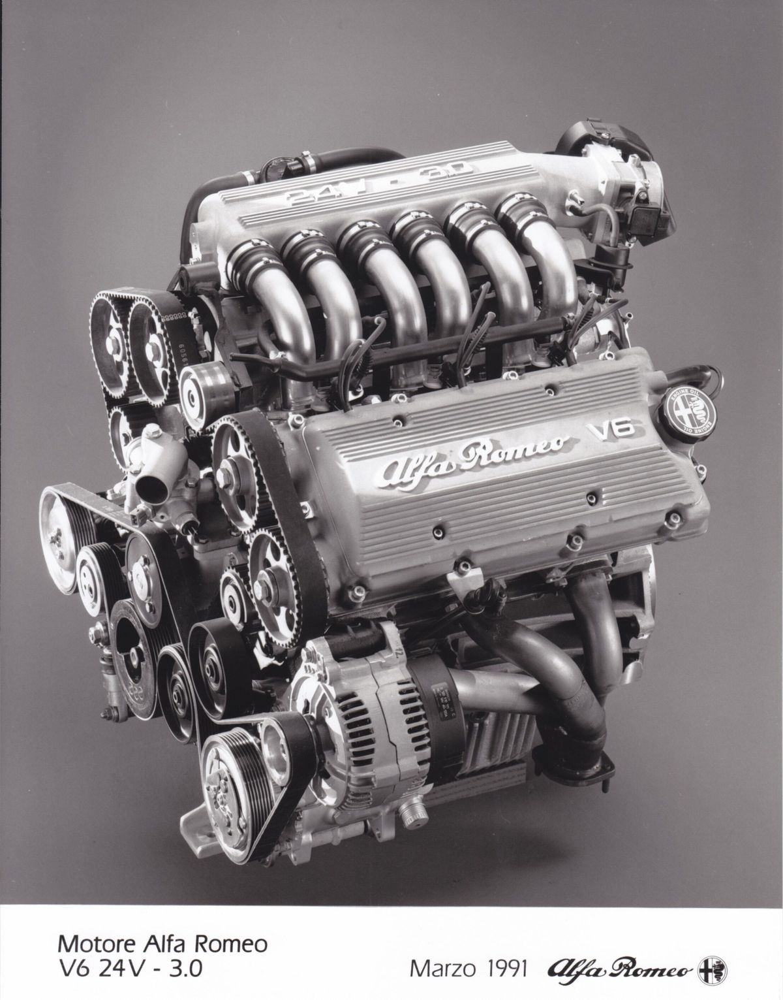
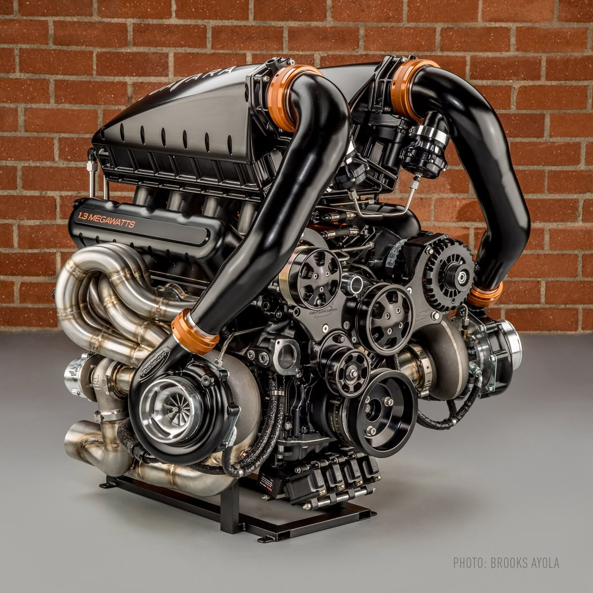
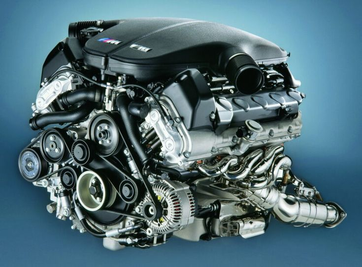
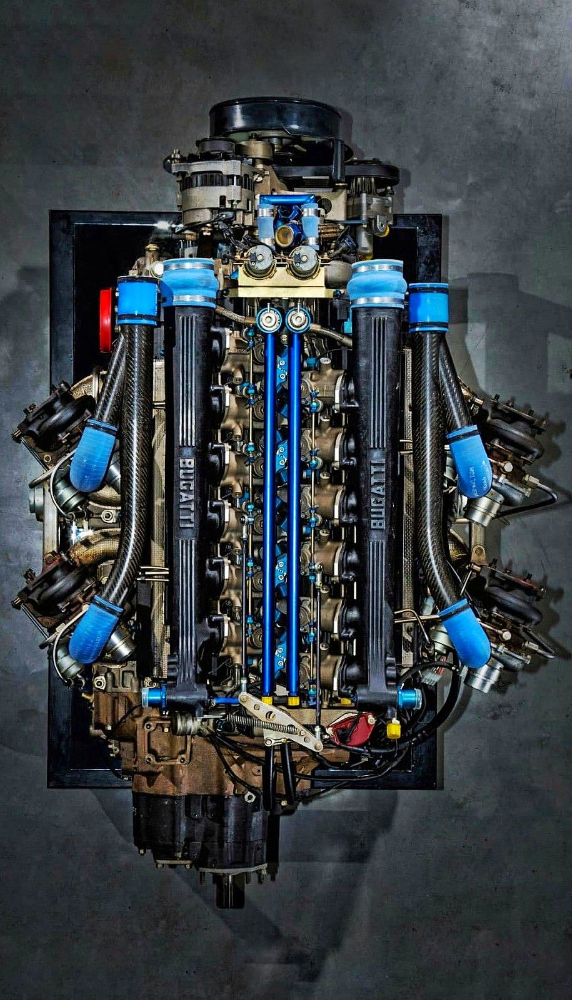
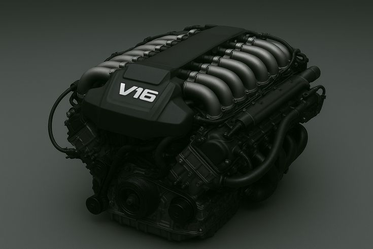
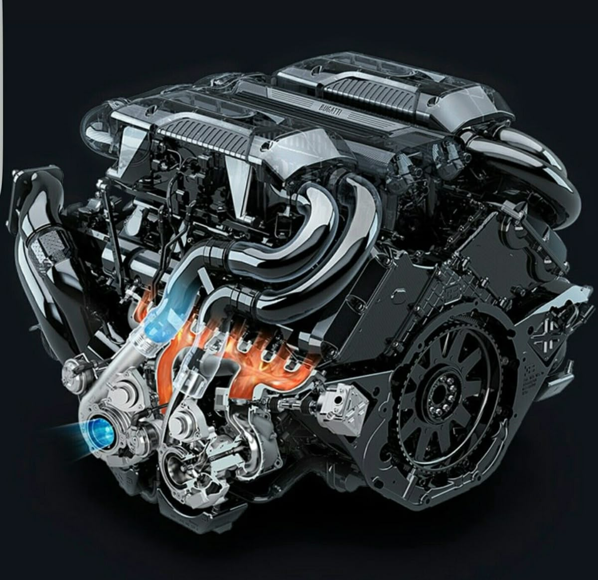

Engine
At Built Different, car engines represent the true heart of performance, power, and driving excitement. The engine determines how a car accelerates, responds, and delivers strength on every road, whether in the city or on the highway. Modern cars come with different engine types such as petrol, diesel, hybrid, and turbocharged engines, each designed to provide a unique balance of power, efficiency, and smoothness. Engine capacity, measured in CC (cubic centimeters), plays a major role in defining the vehicle’s performance and fuel consumption. Advanced technologies like turbochargers and direct fuel injection help improve speed, efficiency, and overall driving experience. Understanding engine details helps drivers choose a car that perfectly matches their lifestyle, performance needs, and passion for driving.

4 cylinder engine

rotary engine

V6 engine

V8 engine

V10 engine

V12 engine

V16 engine

W18 engine